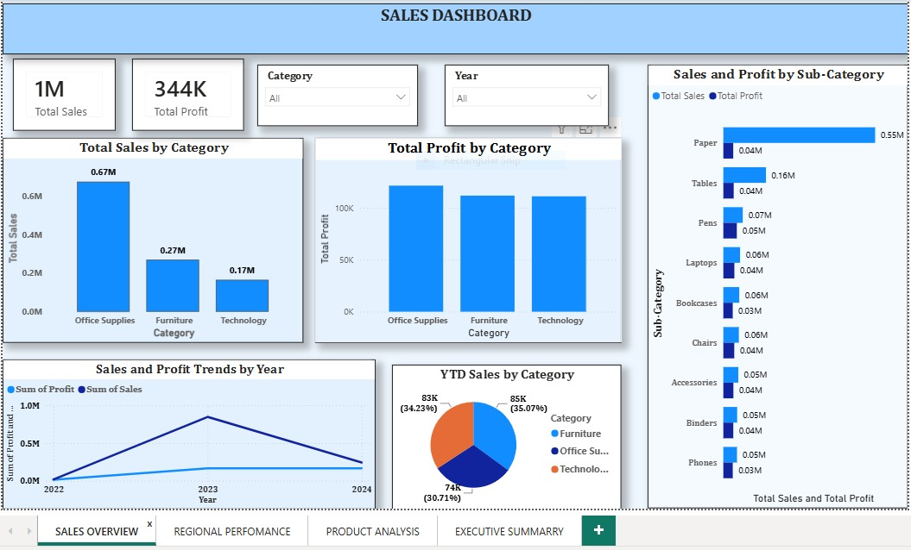

Category Performance | YoY Trends | Profit Analysis
The Sales Dashboard provides comprehensive visibility into total sales by category, profit margins, year-over-year trends, and subcategory performance. This dashboard enables quick identification of top-performing categories and areas requiring attention.

Figure 1: Sales Overview Dashboard - Interactive charts showing category performance, profit trends, and subcategory breakdowns
Office Supplies generates $67M in sales with a 26.69% profit margin, making it the strongest category. This category has consistent performance across all quarters and minimal volatility.
Furniture ($27M) and Technology ($17M) are secondary revenue drivers. While Technology shows higher growth potential (+22% YoY), Furniture offers more stable margins.
Office Supplies maintains strongest margins (26.69%), followed by Technology (26.57%) and Furniture (26.49%). Consistency suggests healthy pricing strategy across categories.
Sales peak in October/December with ~$11M+ monthly revenue, dropping to $6-7M in slower months. Year-over-year comparison shows consistent patterns between 2022-2024.
Allocate 50% budget to Office Supplies, 30% to Technology, 20% to Furniture based on revenue contribution.
High PriorityBundle office supplies with technology solutions to increase average transaction value and market penetration.
High PriorityMonitor subcategory performance monthly. Rotate inventory based on seasonal demand patterns identified in dashboard.
Medium PriorityMaintain current pricing strategy for high-margin categories. Avoid aggressive discounting that would erode 26%+ margins.
High PriorityUse category dropdowns to focus on specific product lines and compare their performance metrics.
Review year-over-year lines to identify growth patterns, seasonal dips, and opportunities for improvement.
Track profit margin changes by category to ensure pricing strategy remains competitive and healthy.
Use monthly sales data to forecast demand 3 months ahead and optimize inventory levels.